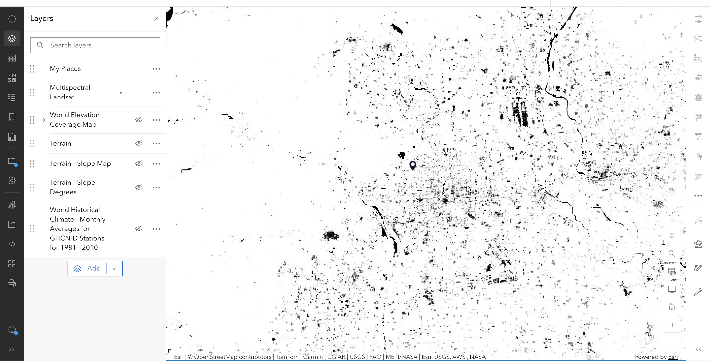
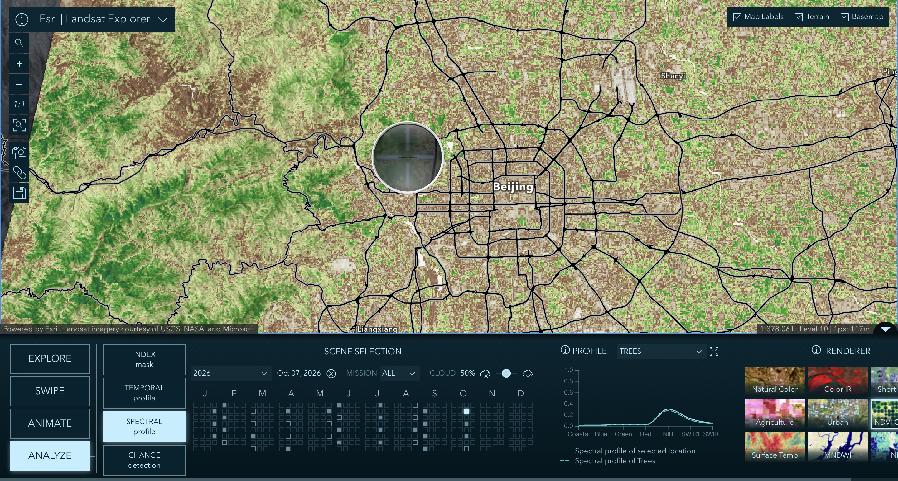
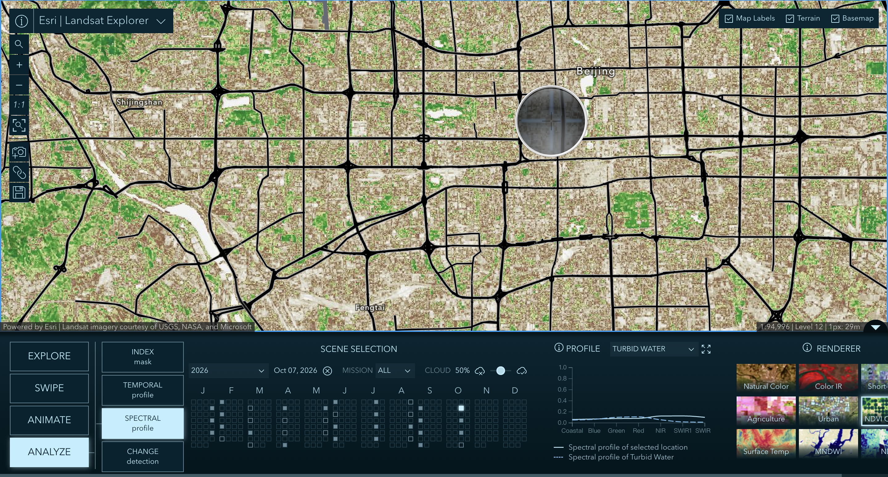
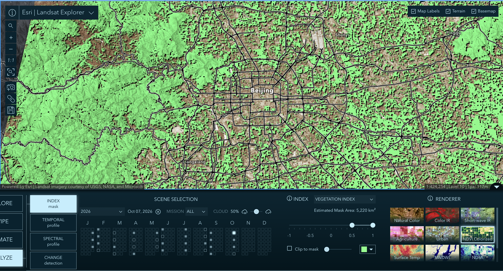
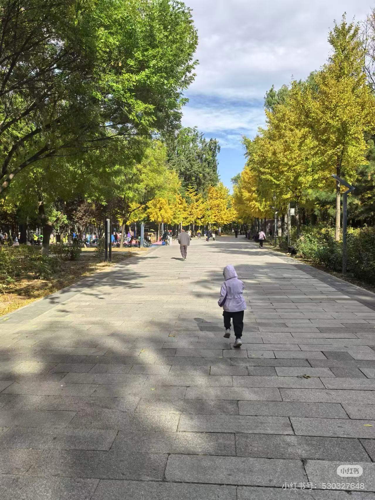
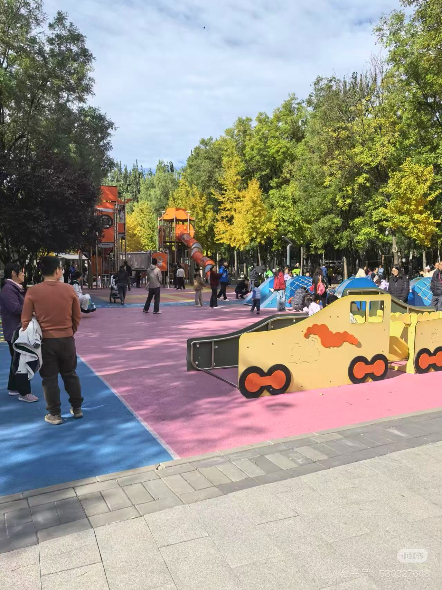

The question
What is the green at my site in Haidian actually made of?
The data
Sensor: Landsat 8/9 OLI/TIRS, cell size 30 m. Date: October 23, 2026. Cloud cover: 0.00%. Index: NDVI using Band 5 (NIR) and Band 4 (Red). Licence: Public, token-free (Esri Living Atlas).
The method
I used the Multispectral Landsat layer and the NDVI Raw processing template to read the site value (0.205). In Landsat Explorer, I recorded the acquisition date and cloud cover, and used the Spectral Profile tool to compare the reflectance of a forest vs. a built surface. I set a threshold mask at 0.5 to identify high-greenness areas and locate a non-habitat place.
The evidence






What I found
1. Expectation vs. what the map showed. I predicted that the Olympic Forest Park would have the highest NDVI, followed by the Summer Palace, and the golf course would be the lowest. The actual data showed that dense woodlands score high, but the managed grass of the golf course also scores very high because it is continuously irrigated and fertilized.
2. Site. The index at my site is 0.205, on October 23, 2026, at 0% cloud cover. The green at my site is actually made of a mix of urban street trees and small residential lawns, surrounded by concrete and asphalt.
3. City. Compared to the 0.5 threshold, my site is relatively low. It is below the heavily vegetated areas like the Summer Palace and Olympic Forest Park, showing that my neighborhood is dominated by built surfaces rather than dense canopy.
4. The named place. My high-index, low-habitat place is the Bajia Suburban Park (八家郊野公园) area near Qinghe. Its approximate NDVI value is above 0.5. While the satellite image shows it as a solid block of "green," ground-level photos reveal extensive rubber playgrounds, wide paved walking paths, and neatly arranged monoculture trees. It is a highly managed recreational area that provides very little actual biodiversity or structural habitat.
5. Limits. This map cannot tell the difference between a biodiverse native woodland and a monoculture lawn. It only measures leaf density and does not see what is underneath the canopy.
What this does not show
Proxy sentence: I am using the NDVI at my site to stand for how much living habitat is actually there, and it might fail because it counts a highly managed recreational park with paved paths and manicured trees as the same green as a natural forest.
It also does not show what is under the canopy, or the presence of specific species. A golf course can have a higher NDVI than a wetland.
AI-usage disclosure
AI-assisted for tidying the HTML and checking structure, using DeepSeek. The index readings, the threshold, the choice of the non-habitat place and the proxy sentence are my own.
Personal reflections have been submitted privately in Brightspace.